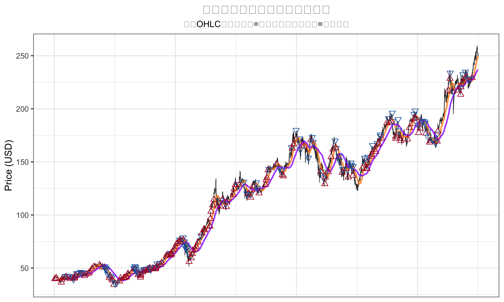
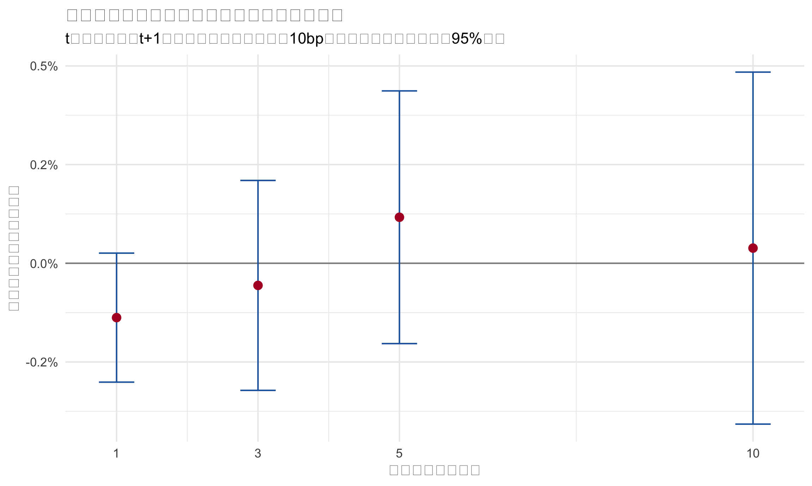

跳空与持续形态
问题现场
趋势中的短暂停顿既可能是换手，也可能是反转前兆。上升三法与下降三法试图识别“强推动—窄幅整理—继续推动”，但如果允许过多中间K线或过宽回撤，几乎任何趋势都能被事后套入。持续形态的关键是先定义趋势，再定义整理没有破坏什么。
学习目标
- 区分普通、突破、持续和衰竭缺口的事后性质；
- 参数化上升/下降三法、并列线、田字缺口和分手线；
- 识别持续信号中的趋势过滤与重复计数；
- 使用R/Python形成统一方向信号；
- 检验持续形态在不同持有期下是否保持方向。
经典形态与市场机制
窗口是相邻K线价格区间不重叠形成的缺口。向上窗口常被视为支撑，向下窗口常被视为阻力，但“突破缺口”还是“衰竭缺口”通常要靠未来行情才能命名。上升三法由长阳线、若干被其范围包含的小阴阳线和再次突破的阳线组成；下降三法方向相反。分手线由反色K线构成，开盘位置接近而后恢复原趋势。田字缺口和跳空并列线强调缺口未被后续K线迅速回补。
可计算定义
严格向上窗口为 \(L_t>H_{t-1}\)，向下窗口为 \(H_t<L_{t-1}\)；只看实体时则比较实体边界。上升三法要求第一根与最后一根为相对长阳线，中间小实体大部分位于第一根高低范围内，最后收盘高于第一根收盘。add_csp_three_methods() 使用20日实体尺度与默认阈值识别五根结构。
持续信号仍记为方向 \(s_t\)。本章显式保留缺口、三法、分手线和田字缺口四组原始列，再形成等权净方向。缺口进入组合只代表“检验方向延续”这一预注册假设；它并不把缺口事后命名为突破、持续或衰竭。
研究设计
主实验比较组合持续信号在1、3、5、10日的方向调整净收益。若同一趋势连续触发信号，非重叠样本只保留第一个。稳健性一：将三法单独检验，检查组合是否被频繁的分手线主导；稳健性二：要求信号方向与50日均线方向一致，但该过滤规则在查看结果前固定。
R实现
ohlc <- lab_xts()
gap_r <- eCandleSticks::add_csp_gap(ohlc)
methods_r <- eCandleSticks::add_csp_three_methods(ohlc)
separating_r <- eCandleSticks::add_csp_separating_lines(ohlc)
tasuki_r <- eCandleSticks::add_csp_tasuki_gap(ohlc)
signal_r <- sign(
as.integer(gap_r[, "GapUp"]) -
as.integer(gap_r[, "GapDown"]) +
as.integer(methods_r[, "RisingThreeMethods"]) -
as.integer(methods_r[, "FallingThreeMethods"]) +
as.integer(separating_r[, "BullSeparatingLines"]) -
as.integer(separating_r[, "BearSeparatingLines"]) +
as.integer(tasuki_r[, "UpsideTasukiGap"]) -
as.integer(tasuki_r[, "DownsideTasukiGap"])
)严格三法在单标的日线中非常稀少。事件数为个位数时，代码应返回宽区间或缺失统计，而不是用百分比制造精确感。
Python实现
from ecandlesticks import add_gap, add_separating_lines, add_tasuki_gap, add_three_methods
from python.candlestick_lab import load_data, to_ohlcv
ohlcv = to_ohlcv(load_data())
gap = add_gap(ohlcv)
methods = add_three_methods(ohlcv)
separating = add_separating_lines(ohlcv)
tasuki = add_tasuki_gap(ohlcv)
signal_py = (
gap["GapUp"].astype(int)
- gap["GapDown"].astype(int)
+ methods["RisingThreeMethods"].astype(int)
- methods["FallingThreeMethods"].astype(int)
+ separating["BullSeparatingLines"].astype(int)
- separating["BearSeparatingLines"].astype(int)
+ tasuki["UpsideTasukiGap"].astype(int)
- tasuki["DownsideTasukiGap"].astype(int)
).clip(-1, 1)两语言的TA-Lib覆盖范围和自定义规则并不完全相同。报告时列出具体函数，而不能只写“持续形态组合”。
图形诊断

图上检查最后一根是否真正恢复原趋势、整理期是否突破第一根边界、缺口是否来自除权。若只有事后完整趋势才看得出形态，规则不可实时使用。
证据与稳健性
| sample | events | mean_gross | mean_net | win_rate | ci_low | ci_high |
|---|---|---|---|---|---|---|
| 全部事件 | 587 | 0.0022 | 0.0012 | 0.5162 | -0.0020 | 0.0044 |
| 非重叠事件 | 330 | 0.0026 | 0.0016 | 0.5242 | -0.0026 | 0.0059 |

组合的全部事件与非重叠事件差异显示聚集程度；持有期曲线检查效应是立即发生还是缓慢出现。还应把缺口按ATR标准化，避免高价时期更易超过绝对阈值。若加50日趋势过滤后效果改善，必须用留出样本验证，不能把同一数据上的改善称为稳健结论。
AI协作实验室
AI任务是把五根三法写成状态机，并自动生成“中间K线越界”“最后一根未突破”等失败样本。约束是不读取未来第六根。验收通过时间索引单元测试、R/Python列名检查和事件发生日人工复核完成。
失效条件与常见误区
- 用后续是否继续上涨来定义“持续缺口”；
- 把任何上涨中的三根小阴线都叫上升三法；
- 忽略严格形态的极小样本；
- 同一趋势内重复信号当作独立样本；
- 把除权缺口当交易缺口。
本章小结与练习
跳空与持续形态研究必须把事前特征、事后回补标签和执行约束分开。窗口名称尤其容易包含未来路径，实时规则只能使用当时可见的几何与上下文。
- 分别统计三法、分手线与田字缺口事件数。
- 加入50日均线方向过滤，并在时间后半段单独验证。
- 设计一个次日立即回补的窗口反例，讨论它在信号时刻能否被排除。
进入下一章前，请确认你能说明“缺口方向”与“缺口类型”的区别，并能处理趋势内重复事件。